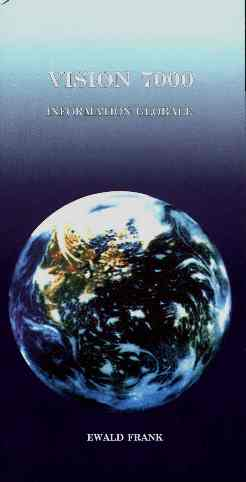

|

|
|
Titre
original de louvrage:
«VISION 7000» – Global-Information
Auteur:
Missionnaire Ewald Frank, Krefeld (Allemagne)
Copyright
© 1996 by
Freie Volksmission e.V., Krefeld (Allemagne)
Traduit
de lallemand. Tout droit de reproduction,même partiel, est réservé.
Editeur
Centre Missionnaire de la Parole Parlée,
Case Postale 5633,
1002 Lausanne
Suisse
|
VISION
7000
INFORMATION
GLOBALE
du
missionnaire Ewald Frank
Chers lecteurs,
Seul un
peu de votre précieux temps vous est nécessaire pour la lecture de ce court
exposé. Nous vivons vraiment une époque très mouvementée, car chaque jour
nous parviennent des nouvelles à propos d’événements particuliers. L’équivalent
des événements qui, autrefois, avaient lieu pendant un siècle nous sont relatés
aujourd’hui dans un seul bulletin radiophonique quotidien. Catastrophes
naturelles, famines, détresses suscitées par la guerre, luttes tribales, “nettoyages”
ethniques, terrorisme à motif religieux, crimes inconcevables et criminalité
clans tous les domaines nous sont signalés dans le monde entier. Dans un même
pays il est arrivé qu’en même temps, sur la côte Ouest un incendie dévore
des centaines de kilomètres carrés de forêts pendant que sur la côte est,
un ouragan cause des ravages inestimables. Rien ne semble plus être comme
autrefois. Quant aux problèmes politiques, économiques et sociaux, aucune
solution satisfaisante n’est trouvée, autant sur le plan national qu’international.
Dans cet
exposé, nous voulons nous occuper brièvement des événements actuels à la lumière
des prophéties bibliques, car nous nous approchons à vive allure de l’an
2 000. Bientôt, pratiquement 6 000 ans se seront écoulés depuis
que les premiers hommes ont vu la lumière de ce monde. D’Adam à Abraham
se sont écoulés approximativement 2 000 ans; d’Abraham à Christ
se sont écoulés encore 2000 ans et, de la naissance de Christ (c’est-à-dire
depuis le début de notre chronologie) encore 2 000 ans se sont écoulés.
Nous pouvons nous demander avec raison si ce tournant du siècle ne sera pas
également un tournant dans l’histoire de l’humanité.
Plus nous
nous approchons de l’an 2 000, plus augmentent les spéculations
faites à ce sujet. Les experts nous dépeignent une image sombre de ce proche
avenir. Certaines personnes, comme ce membre du Congrès des Etats-Unis, expriment
l’opinion que peut-être notre génération est la première à devoir
craindre d’être la dernière de cette civilisation. On parte ouvertement
de «l’eschatologie» et de «l’enfer apocalyptique»
qui seraient sur le point de faire irruption sur le globe. La plupart des
gens s’inquiètent visiblement de ce qui pourrait arriver dans un avenir
très proche. Pour ce qui concerne ces thèmes tant importants, devons-nous
recourir à des clairvoyants ou à des “non-voyants”? Devons-nous
consulter les déclarations des philosophes et les interpréter, ou peut-être
même rechercher ce que pensent les diseurs de bonne aventure et les astrologues?
Pouvons-nous réellement trouver des réponses sûres à ces questions? —
Certainement, car il est écrit: “Et nous avons la parole prophétique
rendue plus ferme, à laquelle vous faites bien d’être attentifs, comme
à une lampe qui brille dans un lieu obscur jusqu’à ce que le jour ait
commencé à luire et que l’étoile du matin se soit levée dans vos coeurs…”
(2 Pier. 1.19).
Une information
actuelle, tirée des Saintes Ecritures, est urgente et devrait être bien accueillie
par chaque personne qui aimerait avoir une réponse honnête et sincère. Parce
que Dieu est omniscient, Il pouvait faire écrire dès le commencement ce qui
allait arriver à la fin des temps. Les hommes ne peuvent écrire l’histoire
que par la connaissance qu’ils ont des événements ayant déjà eu lieu.
Par contre, c’est à l’avance que Dieu a décrit l’ensemble de
l’histoire du monde, de même que «l’histoire du salut»
qui s’y déroule; et cela jusqu’à l’établissement des nouveaux
cieux et de la nouvelle terre, jusqu’à ce que le temps débouche de nouveau
dans l’éternité. Le cours du temps est fixé et est sans retour.
Dans «Vision
7000» nous voulons d’une part attirer l’attention sur ce qui
vient inexorablement à notre rencontre, et cela dans un proche avenir, de
l’autre montrer le seul chemin possible pour échapper à la ruine imminente.
En ce qui concerne le cours actuel des choses, il existe réellement une orientation
claire, laquelle est en rapport avec les «signes des temps» annoncés
à l’avance dans les Ecritures saintes. Même si depuis 2000 ans environ
il semble que, directement du ciel, rien ne soit arrivé qui ait bouleversé
le monde, et qu’ainsi les hommes aient de la peine à croire que Dieu
soit à l’oeuvre dans l’histoire, cependant ce qui est écrit arrivera
tout de même parce que cela a été dit à l’avance dans la Parole de Dieu.
Dieu créa
le monde en six jours, puis il se reposa le septième jour. Lorsqu’il
s’agit d’un «âge prophétique», aux yeux de Dieu un jour
est comme mille ans pour nous. Il est ainsi écrit: “Mais n’ignorez
pas cette chose, bien-aimés, c’est qu’un jour est devant le Seigneur
comme mille ans, et mille ans comme un jour” (2 Pier. 3.8; Ps. 90.4).
Dans Actes 2.17, en se référant à la prophétie du prophète Joël, l’apôtre
Pierre parle “des derniers jours” dans lesquels le Saint-Esprit
serait répandu; par cela il indiquait les 2000 ans environ du temps de la
grâce.
Comme
il est certain que nous nous trouvons à la fin de la période de six mille
ans, ainsi il est tout aussi certain que le «jour du Seigneur»,
le septième jour de Dieu qui est le septième millénaire, se trouve à notre
porte. Conformément à Apocalypse 20 ce sera ce Règne de paix de mille ans
où Christ sera avec les Siens sur terre et auquel se rapporte le verset 6:
“Bienheureux et saint celui qui a part à la première résurrection;
sur eux la seconde mort n’a point de pouvoir; mais ils seront sacrificateurs
de Dieu et du Christ, et ils régneront avec lui mille ans”
Après le processus de purification vient le renouvellement; la terre sera
rétablie dans l’état d’un paradis et là régnera une «paix
véritable»: même le loup et l’agneau paîtront ensemble (Esa. 11.6-9).
Nous trouvons dans la Parole de Dieu d’instructives descriptions en rapport
avec le sujet biblique de la «vision du septième millénaire».
[
RETOUR Table des matières]
LES
PROPHETIES BIBLIQUES ONT LE DERNIER MOT
Sous nos
yeux s’accomplissent actuellement les prophéties faites auparavant dans
les Saintes Ecritures, lesquelles étaient destinées au temps dans lequel nous
vivons maintenant. A cet accomplissement appartient en premier lieu le retour
du peuple d’Israël dans le «pays promis». Sa dispersion parmi
toutes les nations avait déjà été annoncé à l’avance dans Deutéronome
4; et à la fin des temps il devait être à nouveau rassemblé (Esa. 14,1; Jér.
30.3; 31.7-12; Ezé. 36.38). Jésus-Christ a annoncé cela en symbole
lorsqu’Il parlait du «figuier» — lequel symbolise Israël
(Osée 9.10) — comme un signe tout particulier pour la génération actuelle
(Mat. 24.32-41).
En ce
qui concerne le cours des temps, en prenant comme exemple Israël, nous voyons
d’une manière convaincante la façon divine de compter le temps au travers
du concept des «jours prophétiques». Par la bouche du prophète
Osée nous en venons à la connaissance de quelque chose de plus exact: “Venez,
retournons à l’Eternel, car lui a déchiré, et il nous guérira; il a frappé,
et il bandera nos plaies. Dans deux jours il
nous fera vivre (ceci est déjà accompli); au troisième
jour, il nous mettra debout et nous vivrons devant sa face (ceci
doit encore s’accomplir)” (Osée 6.1,2).
Les deux
jours prophétiques qui viennent d’être mentionnés se rapportent indubitablement
aux deux mille ans qui viennent de s’écouler, pendant lesquels le peuple
d’Israël a été dispersé dans le monde entier dès l’an 70. L’Etat
d’Israël existe de nouveau depuis 1948 et des Juifs venus de 143
pays différents y sont revenus. C’est une preuve de l’accomplissement
des promesses divines. En ce qui concerne le troisième jour, il s’agit
du millénaire qui va bientôt commencer lorsqu’Israël aura reconnu
Jésus-Christ comme son Messie et qu’il recevra la vie spirituelle produite
par l’Esprit. En rapport avec Israël l’apôtre Paul a écrit
ce qui suit: “Car si leur réjection est la réconciliation du monde,
quelle sera leur réception, sinon la vie d’entre les
morts… Car je ne veux pas, frères, que vous ignoriez ce mystère-ci,
afin que vous ne soyez pas sages à vos propres yeux; c’est qu’un
endurcissement partiel est arrivé à Israël jusqu’à ce que la plénitude
des nations soit entrée; et ainsi tout Israël sera sauvé, selon qu’il
est écrit…” (Rom. 11.15,25,26).
Aussi
les événements de ces derniers temps en Europe, spécialement le tournant pacifique
d’octobre-novembre 89, se trouvent en accord avec l’accomplissement
des prophéties bibliques. Devant nos yeux prend forme «l’Europe
Unie» telle qu’elle avait été déterminée en 1957 dans le «Traité
de Rome». Les ennemis jurés d’autrefois sont devenus des amis.
Les contrastes entre l’Est et l’Ouest ont cessé pour le moment.
La ligne de séparation divisant l’Allemagne et le continent européen
n’existe plus. Il en résulte une «Maison commune européenne»,
dans laquelle tous doivent trouver place, une «Europe Unie». C’est
ainsi que se relève de nouveau devant nos yeux «l’Empire Romain»
— le dernier des quatre empires mondiaux que le prophète Daniel vit s’élever
sur terre dans l’Ancien Testament (Dan. 2 et 7). Cela correspond à la
«puissance de la Bête» de l’Apocalypse sortant de la mer
des peuples européens et au sujet de laquelle le monde entier s’émerveille
(Apoc. 13). En cela, Il ne s’agit pas seulement de la puissance mondiale
politico-économique, mais principalement de la “cavalière” religieuse
(Apoc. 17) qui tient en main les rênes et dirige de cette manière les événements.
Cette «autorité mondiale» religieuse est respectée et reconnue
par toutes les autorités religieuses et politiques. «L’Europe Unie»
devient la première puissance mondiale qui donne forme, en particulier, au
nouvel «ordre économique mondial». Il en résulte une union religieuse,
politique et économique. La première phase de ce «processus d’unification»
se terminera dans peu de temps, et toutes les conditions requises pour les
événements futurs, qui sont déjà en cours de route, sont déjà présentes.
L’apôtre
Paul, presque 2000 ans à l’avance, eut une vue du développement actuel
à tous les niveaux, et presque 2000 ans à l’avance il écrivit ce qui
devient une réalité sous nos yeux. “Car vous savez vous-mêmes parfaitement
que le jour du Seigneur vient comme un voleur dans la nuit. Quand ils diront:
Paix et sûreté, alors une subite destruction viendra sur eux, comme les
douleurs sur celle qui est enceinte, et ils n’échapperont
point” (1 Thess. 5.2,3).
Depuis
que Michael Gorbatchev accéda au pouvoir, en 1985, bien des conférences pour
la paix et la sécurité ont eu lieu les unes après les autres. Ce qui entra
dans l’histoire sous le titre de «conférences au sommet»,
conduisit à la détente entre l’Est et l’Ouest, permit la réunification
de l’Allemagne et il en résulta l’indépendance des peuples de l’Est
Européen. Les politiciens recherchent maintenant avec encore plus d’ardeur
cette «paix» promise et la «sécurité» totale. Ces
expressions seront de plus en plus employées en rapport avec les événements
du Proche-Orient. Israël sera de plus en plus le «point brûlant»
des événements de la politique mondiale, ainsi que Jérusalem, laquelle sera
une «pierre pesante» pour tous les peuples environnants, comme
le prophète Zacharie l’avait prophétisé (Zach. 12).
Conformément
au troisième «Accord d’Oslo», les pourparlers sur Jérusalem
doivent être terminés en 1999. Comme cela est également annoncé dans la Parole
prophétique, une paix sera finalement publiée. Malheureusement — même
si Israël sacrifie des «terres pour la paix» — seulement
une «paix fictive» sera atteinte par beaucoup de compromis, une
paix négociée par les politiciens et «bénie» par la plus haute
autorité religieuse. Comme il est écrit, c’est précisément à ce moment-là
qu’une ruine soudaine surviendra.
[
RETOUR Table des matières]
Aussitôt
que sera terminé le «jour du salut» (Esa. 49.8; 2 Cor. 6.2), directement
avant le «jour du Seigneur», c’est-à-dire avant le septième
millénaire, le monde sera frappé par de terribles plaies et jugements de la
colère de Dieu. Dans Matthieu 24, ainsi que dans d’autres passages des
Ecritures, le Seigneur Jésus Lui-même indique quelques circonstances qui accompagneront
ce jour. Il parle de guerres et de cris de guerres, de tremblements de terre,
de famines et de catastrophes naturelles de tout genre, et Il ajouta: “Ceci
n’est que le commencement des douleurs”.
Les tremblements de terre et les catastrophes naturelles de tout genre augmenteront
de plus en plus, jusqu’à ce que survienne le tremblement de terre attendu
depuis longtemps, qui surpassera tous les autres, celui de Californie, délimité
par la fissure de San Andreas sur la côte Ouest des Etats-Unis, et que les
scientifiques s’attendent à voir arriver à tout instant. Habituellement
les douleurs précédent toujours une naissance. Selon Romains 8.19-22, la création
toute entière soupire et souffre les douleurs d’un nouvel enfantement.
Jésus annonce la grande tribulation par ces paroles: “Car il y aura
alors une grande tribulation, telle qu’il n’y en a point eu depuis
le commencement du monde jusqu’à maintenant, et qu’il n’y en
aura jamais” (Mat. 24.21).
Dans Luc
21 et dans d’autres passages bibliques, nous est décrit ce qui aura lieu
pendant la grande tribulation. “Et il y aura des signes dans le soleil
et la lune et les étoiles, et sur la terre une angoisse des nations en perplexité
devant le grand bruit de la mer et des flots, les hommes rendant l’âme
de peur et à cause de l’attente des choses qui viennent sur la terre
habitée, car les puissances des cieux seront ébranlées” (Luc 21.25,26).
Nous ne
pouvons pas entrer ici dans les détails des catastrophes inimaginables et
des «jugements apocalyptiques de la colère de Dieu» qui viendront
sur l’humanité impie après l’enlèvement de «l’Eglise-Epouse»
de Jésus-Christ. Le Seigneur Dieu avait commandé aux hommes auxquels Il avait
assigné cette terre de l’assujettir en communion avec Lui. Détachés de
Lui, les hommes détruisent la terre, ainsi qu’eux-mêmes. Préoccupés,
les experts parlent de la pollution de l’air, des eaux et de la terre,
de la nature en général, du danger qu’apportent les trous dans la couche
d’ozone, de «l’effet de serre» qui va déclencher une
catastrophe climatique — jusqu’au point de dissoudre la couche d’ozone,
ce qui fera que le rayonnement du soleil sera sept fois plus fort que
normalement, comme le disent les Ecritures Saintes. C’est ainsi qu’il
est écrit: “Et la lumière de la lune sera comme la lumière du soleil,
et la lumière du soleil sera septuple, comme
la lumière de sept jours…” (Esa. 30.26).
Jean,
le voyant, reçu sur l’île de Patmos une allusion par l’image suivante;
“Et le quatrième versa sa coupe sur le soleil; et il lui fut donné
de brûler les hommes par le feu; et les hommes furent brûlés par une grande
chaleur; et ils blasphémèrent le nom de Dieu qui a pouvoir sur ces plaies,
et ils ne se repentirent pas pour lui donner gloire” (Apoc. 16.8,9).
Dès ce moment le «jour de la grâce et du salut» est passé, de
telle manière que les hommes ne peuvent plus se convertir à Dieu. Pour beaucoup
de personnes ce sera véritablement un réveil terrible, un “trop tard”
pour toujours.
Après
que le soleil ait brûlé la surface de la terre, il sera changé en ténèbres,
car il est écrit: “Le soleil sera changé en ténèbres et la lune en
sang, avant que vienne la grande et éclatante journée du Seigneur”
(Act. 2.20; Joël 2.31). “… et le soleil devint noir comme
un sac de poil, et la lune devint tout entière comme du sang; et les étoiles
du ciel tombèrent sur la terre, comme un figuier agité par un grand vent jette
loin ses figues tardives… Et les rois de la terre, et les grands, et
les chillarques, et les riches, et les forts, et tout esclave, et tout homme
libre, se cachèrent dans les cavernes et dans les rochers des montagnes; et
ils disent aux montagnes et aux rochers: Tombez sur nous et tenez-nous cachés
de devant la face de celui qui est assis sur le trône et de devant la colère
de l’Agneau; car le grand jour de sa colère est venu, et qui peut subsister?”
(Apoc. 6.12-17).
De même
qu’au temps de Noé, Dieu dans Son amour et Sa grâce, avait donné aux
hommes la possibilité d’être sauvés de la catastrophe inévitable du déluge,
c’est-à-dire en entrant dans l’arche, ainsi la Parole de Dieu nous
indique comment échapper à la ruine qui arrive, c’est-à-dire en trouvant
le salut en Jésus-Christ (1 Pier. 3). Ceux qui croient le message de Son Evangile
et se laissent préparer, seront en mesure d’échapper à tout ce qui va
arriver et seront enlevés auprès de Lui dans la gloire céleste (Luc 21.34-36
et autres). A ce contexte appartient aussi cette déclaration de Jésus-Christ:
“Et quand ces choses commenceront à arriver; regardez en haut, et
levez vos têtes, parce que votre rédemption approche” (Luc
21.28).
Une atmosphère
de fin du monde n’est pas à sa place ici, elle n’apporterait aucune
solution. Ce n’est pas la panique, mais plutôt la réflexion et la conversion
à Dieu qui sont requis. Le commandement de cette heure est “Hâte-toi
de sauver ton âme!”, “Car que profitera-t-il à un homme s’il
gagne le monde entier, et qu’il fasse la perte de son âme?”
(Mat. 16.26). Le temps de la grâce arrive à sa fin. Le compte à rebours a
déjà commencé. Le dernier appel de Dieu retentit comme le son de la trompette.
Celui qui désire se réconcilier avec Dieu doit le faire maintenant. Dans ce
contexte, le texte biblique suivant nous mettant en garde, nous fait voir
ce qui suit: “Or le jour du Seigneur viendra comme un voleur; et,
dans ce jour-là, les cieux passeront avec un bruit sifflant et les éléments
embrasés seront dissous, et la terre et les oeuvres qui sont en elles seront
brûlées entièrement. Toutes ces choses devant donc se dissoudre, quelles gens
devriez-vous être en sainte conduite et en piété, attendant et hâtant la venue
du jour de Dieu, à cause duquel les cieux en feu seront dissous et les éléments
embrasés se fondront. Mais, selon sa promesse, nous attendons
de nouveaux cieux et une nouvelle terre, dans lesquels la justice habite”
(2 Pier. 3.10-13).
Beaucoup
d’autres textes bibliques pourraient être cités sur l’ensemble de
ce thème. Tout ce qui a été écrit il y a déjà longtemps entrera bientôt dans
l’histoire. Toutefois, nous devons agir avec sobriété et prudence et
planifier tout à fait normalement notre vie, car personne ne connaît réellement
le temps ni l’heure; nous devrions seulement nous soucier de marcher
avec Dieu et d’être prêts en tout temps à rencontrer le Seigneur. Ce
tout dernier âge, dans lequel nous vivons maintenant a été comparé par notre
Seigneur Jésus-Christ aux jours de Noé et de Sodome et Gomorrhe (Luc 17.26-30).
Personne ne contestera que dans le monde entier et sous tous les rapports
les choses sont pires qu’en ce temps-là. Aujourd’hui comme en ce
temps-là, le monde tombé de la position qu’il avait auprès de Dieu est
mûr pour le jugement. Dieu offre les deux choses: la grâce et le jugement.
Que voulez-vous choisir?
[
RETOUR Table des matières]
En tant
que Créateur, Dieu a un plan pour Sa création; de même, en tant que Rédempteur,
Il a un plan pour Ses rachetés. Celui qui croit à l’existence d’un
Dieu personnel est également convaincu qu’il n’a rien laissé au
hasard. L’Eternel dit: “Je suis Dieu, et il n’y en a point
comme moi, déclarant dès le commencement ce qui sera à la fin, et d’ancienneté
ce qui n’a pas été fait, disant: Mon conseil s’accomplira, et je
ferai tout mon bon plaisir…” (Esa. 46.10). “…
car il consomme et abrège l’affaire en justice, parce que le Seigneur
fera une affaire abrégée sur la terre” (Rom. 9.28).
Celui
qui s’y connaît dans les Ecritures, sait que l’annonce de la venue
d’un Rédempteur a été l’espérance du peuple de Dieu tout au long
de l’Ancien Testament, depuis le jardin d’Eden (Gen. 3). De même,
le retour de Jésus-Christ, le Rédempteur, est l’espérance du peuple de
Dieu depuis le commencement du Nouveau Testament – depuis Son ascension.
Il leur dit: “… je reviendrai, et je vous prendrai auprès de
moi; afin que là où je suis, vous, vous soyez aussi” (Jean
14.3). Ce plus grand événement de l’histoire du salut se trouve maintenant
réellement sur le point de s’accomplir. Selon les nouvelles apparues
dans la presse à la fin de 1995, des millions de personnes dans le monde entier
attendent cet événement. Il y a aussi des fanatiques religieux, comme le démontre
le dernier cas tragique de «L’ordre du temple solaire», qui
causa en octobre 1994 le suicide de 53 personnes, et en décembre 95 de 16
autres. Comme l’a relaté la presse, ils exerçaient leurs dévotions cinq
fois par jours, portant le capuchon de l’Ordre, et ils célébraient chaque
jour la messe. Ce sont des charlatans qui se lèvent toujours à nouveau et
qui diffament la foi véritable. Mais il existe aussi des croyants bibliques
qui attendent joyeusement le retour de Jésus-Christ et qui mènent une vie
tout à fait normale. Ils sont sobres, transparents et véridiques dans tout
ce qu’ils font.
Savoir
si le retour promis de Jésus-Christ et les événements prédits qui le suivront
arriveront avant ou après le tournant du millénaire, cela appartient à Dieu
seul. Cependant, les signes des temps, auxquels nous devons prendre garde,
nous font reconnaître clairement que le temps s’est avancé. Fixer
une date, comme cela a été fait plusieurs fois dans le passé — Dieu soit
loué — n’est pas possible et n’est également d’aucune
utilité. Ainsi, par exemple, dans les prophéties bibliques, l’année
est dotée de 360 jours, contrairement aux 365 selon l’usage courant.
Déjà, de fait, il y a une différence considérable de temps. Ce qui demeure,
c’est qu’à l’exception de Dieu, personne ne connaît, ni le
jour ni l’heure. Cependant, pour notre orientation, des prophéties
claires nous ont été données dans les Saintes Ecritures comme indices.
Lors de
la première venue de Christ, plus de 100 prophéties de l’Ancien Testament
se sont accomplies. Tous les détails important Le concernant, à commencer
par Son engendrement surnaturel, Sa naissance à Bethléem, Son ministère, Ses
souffrances et Sa mort, jusqu’à Sa résurrection et Son ascension, avaient
été prophétisés dans l’Ancien Testament. La même chose se rencontre pour
ce qui est du temps de la deuxième venue de Christ. Il est saisissant de lire
les passages bibliques correspondants, lesquels sont devenus maintenant tout
à fait actuels.
Il y a
2000 ans que l’apôtre Pierre a vu en Esprit comment, dans les derniers
jours précédant le retour de Christ, les gens se moqueraient de Sa venue.
Et c’est ce qui se fait maintenant. Les principaux critiqueurs se trouvent
parmi les théologiens incrédules, lesquels ne comprennent pas le plan des
temps établi par Dieu, pas plus qu’ils ne comprennent la manière dont
Dieu a composé les Ecritures. Ils prétendent, par exemple, que les apôtres
et Jésus Lui-même se seraient trompés jusqu’au dernier chapitre du Nouveau
Testament, quand il dit: “Voici, je viens bientôt!”. Toutefois
la Bible a été écrite de telle manière qu’elle soit valable en tout temps.
Toute parole écrite peut être prêchée et crue pendant tout le temps de la
grâce, jusqu’au moment où l’événement annoncé arrive réellement.
Pierre
fait le point sur ce thème et dit: “… sachant tout d’abord
ceci, qu’aux derniers jours des moqueurs viendront, marchant dans la
moquerie selon leurs propres convoitises et disant: Où est
la promesse de sa venue?” (2 Pier. 3.3,4). A cette question
il répond lui-même: “Le Seigneur ne tarde pas pour
ce qui concerne la promesse, comme quelques-uns estiment qu’il
y a du retardement: mais il est patient envers vous, ne voulant pas qu’aucun
périsse mais que tous viennent à la repentance” (2 Pier. 3.9). Toutefois
il reste peu de temps aux moqueurs, leurs rires et leurs blasphèmes vont se
changer en hurlements et en grincements de dents. “Ne soyez pas séduits;
on ne se moque pas de Dieu: car ce qu’un homme sème, cela aussi il le
moissonnera” (Gal. 6.7). Conformément au témoignage des Ecritures,
Christ revient bientôt comme Il l’a promis et Il enlèvera les Siens dans
la gloire (1 Thess. 4), avant que commence la grande tribulation (1 Thess.
1.10).
Avant
que le Seigneur Jésus ne nous ait précédés dans la gloire, Il fit aux Siens
la promesse de revenir et de les prendre à Lui (Jean 14). Lors de Son retour,
tous les enfants de Dieu qui se sont endormis dans la foi en Christ et qui
auront part à la “première résurrection” seront ressuscités, et
ceux qui vivent dans la foi en Christ seront transmués, alors tous ensemble
ils iront à Sa rencontre pour être pour toujours avec Lui (1 Thess. 4.13-18).
Ils Le contempleront et seront transformés à Son image (1 Jean 3). Cela arrivera
tout aussi certainement que cet événement a été annoncé à l’avance dans
la Parole de Dieu.
[
RETOUR Table des matières]
LA
MAJESTE DE LA CREATION
La réalisation
du plan de salut divin a déjà commencé lors de la création. Chacun de nous
s’est certainement déjà émerveillé de la majesté de la création. Tous
ne reconnaissent malheureusement pas logiquement le Créateur, bien que chacun
sache qu’un horloger devait se trouver là avant qu’une horloge ne
soit construite, qu’un entrepreneur devait exister avant qu’une
maison ne soit bâtie, et ainsi de suite. Il est bien connu que, depuis qu’ils
eurent réalisé par de grandes découvertes des choses qui semblaient impossibles,
les hommes ont mis en doute l’existence de Dieu. Ils ont mis en doute
le récit de la création et l’ont déclaré invraisemblable, et cela plus
particulièrement depuis que Darwin, en 1859, a publié ses thèses. Dans ces
derniers siècles, les philosophes athées ont réussi à rendre crédibles leurs
théories contradictoires, et en même temps ils ont fait tomber les hommes
dans l’incrédulité. Dieu est méconnu et l’homme loué. On a même
mis en avant que tout serait venu de soi-même à l’existence. Celui qui
croit de telles choses peut tout aussi bien renier son père et sa mère et
prétendre s’être fait lui-même – être le produit de l’évolution.
Qui donc
pourrait se représenter que le cosmos, dans son étendue incommensurable, avec
ses étoiles innombrables et sa parfaite harmonie, soit venu à l’existence
de lui-même, par exemple par une explosion originelle? Jusqu’à présent
personne ne s’est présenté qui ait pu améliorer tant soit peu la majesté
de la création. Pensons aux innombrables êtres vivants dans les océans, auxquels
ont été destinés des conditions de vie idéales, ou bien pensons aux millions
d’espèces de bêtes et d’oiseaux vivant sur tous les continents,
comme leur mode de vie s’accorde parfaitement avec les conditions climatiques
différentes où ils sont placés.
Tel qu’au
commencement le Créateur a formé et ordonné toutes choses par Sa Parole Toute-puissante,
ainsi demeurent-elles encore aujourd’hui. Depuis la création de la terre
il est semé et récolté chaque année, comme l’Eternel Dieu l’a ordonné
depuis le début: “Désormais, tant que seront les jours de la terre,
les semailles et la moisson et le froid et le chaud, et l’été et l’hiver,
et le jour et la nuit, ne cesseront pas” (Gen. 8.22). Ce n’est
que là où l’homme agit dans la nature sans réfléchir que surgissent des
perturbations et des désordres. Des milliards de personnes sont journellement
nourries, et si la nourriture était distribuée équitablement, personne sur
la terre ne devrait souffrir de la faim. Non seulement Dieu nourrit journellement
un nombre incalculable d’êtres vivants, mais au travers de la nature
il nous adresse une puissante prédication sur la vie, la mort, et la résurrection.
Chaque printemps s’éveille une vie nouvelle qui va porter de nouveaux
fruits. L’été vient ensuite avec sa riche récolte, puis l’automne,
et les arbres perdent leurs feuilles et la nature meurt. Puis vient le sommeil
de l’hiver, lequel est tout aussi certainement suivi du réveil printanier
pour reprendre le même rythme. “Parce que ce qui peut se connaître
de Dieu est manifeste parmi eux; car Dieu le leur a manifesté; car depuis
la fondation du monde, ce qui se peut voir de lui, savoir et sa puissance
éternelle et sa divinité, se discerne par le moyen de l’intelligence,
par les choses qui sont faites, de manière à les rendre inexcusables”
(Rom. 1.19,20).
De même,
la réalité que tout être vivant se reproduit selon son espèce subsiste pour
toujours. Aujourd’hui encore, la semence qui est répandue est la même
que celle sortie pour la première fois de la terre, lors de la création. Les
mêmes arbres croissent toujours et portent les mêmes fruits, et les mêmes
sortes d’animaux vivent encore sur la terre. Les hommes, le couronnement
de la création, se trouvent être encore exactement les mêmes qu’Adam
et Eve en leurs jours. Dieu leur avait donné les capacités créatrices, et
cela a été démontré au cours des siècles passés, et plus particulièrement
encore dans ces derniers cinquante ans. De la traction animale nous avons
passé à l’avion pour arriver à la navette spatiale. L’homme peut
accomplir en principe tout ce qu’il veut entreprendre, comme Dieu l’avait
dit: “… et maintenant ils ne seront empêchés en rien de ce qu’ils
pensent faire” (Gen. 11.6b). Je compris cela tout particulièrement
le 9 décembre 1995, lorsque l’astronaute d’Apollo 16, le général
hors service Dr. Charles Duke, parla à Berlin de son voyage sur la lune en
avril 1972.
Il n’y
a qu’une seule chose que l’homme ne peut pas faire: créer la vie.
Ceux qui croient à l’évolution et parlent d’une cellule initiale,
devraient dans ce cas nous dire qui est celui qui a créé la cellule initiale
et a mis la vie en elle? On pourrait aussi poser la question de savoir qui
a donné la capacité à tout être vivant de se multiplier? Pourquoi donc les
athées ne sèment-ils pas du blé fabriqué artificiellement? C’est parce
qu’ils savent très bien qu’il ne germerait pas, n’ayant point
de germe de vie en lui. La création majestueuse et toute-puissante devrait
en fait donner à tout homme normal qui réfléchit la certitude de l’existence
d’un Créateur Tout-puissant. Si les hommes ne s’étaient pas détournés
de Lui, ils pourraient croire Sa Parole et discerner le témoignage que la
création déploie chaque jour devant nos yeux. Pour tous ceux qui sont dignes
de la Vie éternelle, Dieu et Sa Parole demeurent éternellement vrais et dignes
de foi.
[
RETOUR Table des matières]
DESTINES
A VIVRE EN COMMUNION AVEC DIEU
Selon
la volonté de Dieu les hommes ont été destinés dès le commencement à vivre
en communion avec Lui. C’est la raison pour laquelle, quelle que soit
leur race ou leur religion, ils ont le désir d’adorer un Etre suprême.
Tous ressentent en eux-mêmes un besoin inexplicable d’adoration, sans
égard à la manière dont elle est pratiquée. Si une personne ne trouve pas
une chose religieuse qu’il puisse adorer, il adorera alors Mammon, une
passion, le sport, quelque passe-temps favori, ou encore une idole. Cette
profonde aspiration que chaque homme, riche ou pauvre, porte en lui ne peut
être valablement étanchée que par ce qui est divin.
Les croyants
juifs prient le Dieu qui s’était présenté personnellement à eux, du temps
de Moïse, comme étant le Dieu d’Israël. Un Juif véritable ne
peut croire qu’à un seul et unique Dieu, car Lui-même a dit: “Ecoute,
Israël, l’Eternel, notre Dieu, est un seul Eternel” (Deut.
6.4). Dans l’Ancien Testament il est écrit environ 6’700 fois “L’Eternel
Dieu” – “Yahweh Elohim”. Les croyants bibliques juifs
attendent en tout temps la venue du Messie et la reconstruction du Temple,
comme l’Eternel le leur a promis.
Les musulmans
prient également un seul Dieu, qu’ils appellent Allah. Leur prophète
Mahomet croyait que le Messie avait été engendré par l’Esprit, mais il
niait la crucifixion de Christ. Pour lui c’était un grand prophète et
messager de Dieu, et il croyait que Dieu l’avait repris à Lui à la fin
de son service, mais il ne croit pas qu’il était Le Seigneur et Sauveur.
Mahomet prêchait le monothéisme absolu, mais il n’avait aucune compréhension
de la révélation de Dieu Lui-même en Christ, ni de la nécessité de la rédemption.
Les Hindous
croient à leur trinité principale, composée de Brahma, le créateur, de Vishna,
le conservateur, et de Shiva, le destructeur et rénovateur, et ils ont aussi
un grand nombre de dieux. Ils mettent leur confiance en l’enseignement
qui dit que dans une autre vie à venir, éventuellement sous la forme d’une
bête, et que, par un processus de purification perpétuel, ils finiront par
atteindre le but. Les Bouddhistes croient de la même manière à la réincarnation
et se fondent, pour leur salut, sur la méditation. Là aussi, de même que dans
l’islam et l’Hindouisme, c’est en vain que l’on cherche
un message divin exprimant le salut et l’espérance pour l’éternité,
comprenant la certitude de la victoire sur la mort. Mais une religion sans
le salut ni une véritable espérance n’est-elle pas une religion vaine?
Ce qui
est important, c’est la “volonté de Dieu” révélée et confirmée,
dans laquelle l’homme doit se laisser insérer. Une période a existé,
dans laquelle, au paradis, les premiers hommes vécurent dans une communion
directe avec l’Eternel Dieu. Dans cet état originel d’innocence
ils ne connaissaient rien de la souffrance, des douleurs, de la maladie ou
de la mort. En tant que créatures de l’Eternel ils étaient destinés à
vivre éternellement. Le Dieu éternel leur avait donné le libre arbitre, de
telle manière qu’ils pouvaient prendre leur propre décision, laquelle
signifierait la vie ou la mort. Ils pouvaient choisir entre le bien et le
mal, l’obéissance et la désobéissance, la loi et l’incrédulité.
Il en est aujourd’hui de même pour chacun de nous. Dès le commencement
le point capital était l’obéissance, et malheureusement c’est là
que l’homme faillit; tout d’abord Eve, puis ensuite Adam. Eve écouta
les arguments et les mensonges de Satan venu sous la forme du serpent, fut
séduite, tomba dans le péché, et entraîna Adam avec elle. Ainsi, le péché
originel fut accompli et par la transgression des commandements de Dieu tous
deux tombèrent sous l’influence du méchant et durent mourir. Le Dieu
Eternel accomplit ainsi la menace qu’il avait faite et Il les chassa
du jardin d’Eden. La communion avec Lui était brisée, et la souffrance,
les maladies et la mort vinrent sur toute l’humanité, malgré la belle
promesse faite par l’ennemi: “Vous ne mourrez point certainement…
et vous serez comme Dieu…” (Gen. 3.4,5).
Personne
ne peut se déclarer innocent en disant: «Je ne suis pas coupable de
cela». En effet, chaque homme et chaque femme, chaque jeune homme et
jeune fille, aurait fait exactement comme Adam et Eve – et c’est
certainement ce qu’ils font encore aujourd’hui. Dieu connaît tous
les hommes et Il savait qu’aucun n’était capable, de lui-même, d’accomplir
tous Ses commandements et Ses préceptes. Cependant, dans Sa justice, il les
a donnés afin que nous reconnaissions notre transgression et notre désobéissance
à Son égard.
S’il
n’existait point de lois divines, personne ne pourrait être convaincu
de transgression, et aucun ne verrait la nécessité du pardon et du salut.
Nous sommes tous venus dans ce monde séparés de Dieu et perdus loin de Lui,
et c’est la raison pour laquelle nous avons besoin du salut et de la
réconciliation avec Lui. La conscience exhorte chacun, même ceux qui n’ont
jamais entendu le Message divin, ni lu la Bible. Chacun sait très bien quand
il ment, quand il trompe, vole ou fait quelque chose de défendu. Nous nous
sommes tous rendus coupables envers Dieu, que l’on soit riche ou pauvre,
bon ou méchant. Qu’aucun ne s’imagine que, parce qu’il n’a
ni tué, ni volé, ni fait tort à personne, ce n’est pas si mauvais que
cela. Le juste jugement de Dieu a été prononcé sur chacun, et c’est la
raison pour laquelle tous doivent mourir. Rien dans la vie n’est aussi
certain que la mort. “Et comme il est réservé aux hommes de mourir
une fois, et après cela le jugement…” (Héb. 9.27). Nous sommes
responsables de nos actes.
La communion
avec Dieu a été interrompue par la chute dans le péché. Cependant Dieu a pensé
à nous et à Lui-même ouvert un chemin conduisant à Lui par Celui qui pouvait
dire: “Moi, je suis le chemin, et la vérité, et la vie; nul ne vient
au Père que par moi” (Jean 14.6). Dans Son amour infini et Sa miséricorde,
l’Eternel est venu à nous afin que nous puissions venir à Lui.
Comme
c’est dans ce corps terrestre que nous avons péché, Dieu dut prendre
un corps pareil au nôtre pour être le substitut de l’humanité entière,
afin que Lui, le seul innocent, puisse prendre le péché de nous tous et nous
réconcilier avec Dieu. C’est ce qui est arrivé en Jésus-Christ notre
Seigneur, Lequel appelle encore aujourd’hui: “Venez à moi vous
tous qui vous fatiguez et qui êtes chargés, et moi, je vous donnerai du repos”.
Les personnes qui répondent à Son appel et viennent à Lui peuvent alors, lorsque
leur dernière heure est venue, remettre leur esprit entre Ses mains et être
certains qu’Il leur donnera aussi la même réponse: “En vérité,
je te dis: Aujourd’hui tu seras avec moi dans le paradis” (Luc
23.43). Mais sans aucun doute, celui qui vit consciemment sans Lui, mourra
aussi sans Lui. Seuls sont bienheureux ceux qui vivent avec Christ et qui
meurent en Lui (Rom. 14. 7,8; Apoc. 14.13).
[
RETOUR Table des matières]
ACTION
SURNATURELLE DE DIEU
L’incarnation
du Sauveur fût une action surnaturelle de Dieu dans le domaine naturel. Marie
naquit dans ce monde de la même manière que tout autre être humain, et elle
aussi eut besoin du salut. Tout simplement, elle avait été choisie par Dieu
pour être un vase terrestre dans lequel la Semence divine fût placée afin
que la Parole puisse devenir chair. Marie eut besoin elle-même
de faire une expérience de salut, et c’est pourquoi le jour de Pentecôte,
elle se trouvait dans la chambre haute à Jérusalem parmi les 120 qui expérimentèrent
le baptême du Saint-Esprit, expérience qui fait partie du salut (Act. 1.14;
et autres).
Dieu n’a
qu’une manière de sauver, et c’est toujours en rapport avec la foi
dans la Parole promise. Marie crut le message divin apporté par l’ange
Gabriel, et elle dit: “Voici l’esclave du Seigneur qu’il
me soit fait selon ta parole” (Luc 1.38). C’est de cette manière
que la Parole est devenue chair et que le Fils de Dieu est né. De la même
manière, tous les hommes et toutes les femmes doivent croire le message divin,
se mettre à disposition de Dieu et recevoir en eux-mêmes la Parole de promesse.
C’est uniquement de cette manière que peut naître en eux une vie divine,
opérée par l’Esprit, au travers de la nouvelle naissance. Après la fondation
surnaturelle de l’Eglise du Nouveau Testament par l’effusion du
Saint-Esprit le jour de Pentecôte, Marie n’est plus mentionnée, même
pas une seule fois, jusqu’à la fin de la Bible, que ce soit par Pierre,
Jean, Jacques, où même Paul et d’autres. Elle avait simplement accompli
la tâche qui lui avait été confiée. Dès lors il ne s’agit plus que de
Jésus, le Christ, le seul Sauveur, le seul Médiateur et Intercesseur. La “Mariologie”
est tout à fait étrangère à la Bible et se trouve opposée à Jésus-Christ.
Quant
à l’esprit, Jésus-Christ était Dieu, quant à la chair, Il était homme.
Il était absolument saint et sans péché et c’est pourquoi Il pût prendre
sur Lui-même tous les péchés de chacun de nous, et mourir à notre place. Par
Son Sang, dans Lequel se trouvait la vie divine, Il a accompli la réconciliation
et apporté à tous le pardon. Cependant, seuls ceux qui croient cela peuvent
l’expérimenter. Une pleine expiation et le parfait salut de l’âme,
de l’esprit et du corps ont été ainsi accomplis en Lui. Par Sa résurrection
au troisième jour, l’oeuvre de délivrance a été divinement couronnée
et légitimée. La mort, l’enfer et le diable ont été vaincus, et le Seigneur
ressuscité est le véritable vainqueur de Golgotha. Après Sa résurrection Il
est apparu à Ses disciples pendant quarante jours et Il les a enseignés au
sujet du Royaume des cieux (Act. 1.3). Et c’est ensuite sous leurs yeux
qu’il est monté au ciel (Luc 24.50,51). Ces réalités divines sont pour
tous les croyants bibliques l’ancre inébranlable de leur âme. C’est
dans Sa résurrection que nous avons le fondement de la résurrection de tous
les Siens; c’est dans Son ascension que nous avons la certitude d’être
enlevés dans notre Patrie céleste pour être auprès de Lui.
Le Dieu
Tout-Puissant a préparé avant la fondation du monde un Royaume éternel destiné
à Ses fils et Ses filles. Il était impossible que la faillite des hommes puisse
rendre irréalisable le plan de Dieu et le rendre vain, Il en résulta une interruption
momentanée que Dieu avait déjà prévue. L’humanité, qui s’était élevée
de sa propre volonté contre Dieu et s’était ainsi placé sous l’autorité
de Satan, a été rachetée et ramenée par le Seigneur sans qu’elle n’y
soit pour rien. Le salut est à la fois une réalité historique aussi bien qu’une
réalité de l’histoire du salut. C’est par l’Evangile que le
message divin qui réjouit et libère les âmes est apporté aux hommes. En lui
se trouve compris tout ce que la grâce de Dieu nous offre. A cause de cette
rédemption et lorsqu’ils acceptent pour eux-mêmes ce salut dans la foi,
les enfants des hommes qui étaient dès leur naissance des enfants de la mort,
deviennent des enfants de Dieu nés de nouveau et ayant la vie éternelle.
Puisque
le Royaume de Dieu est un Royaume éternel, tous ceux qui veulent y entrer
doivent posséder la vie éternelle. C’est la raison pour laquelle il est
indispensable, comme notre Seigneur Lui-même l’a exigé, que chacun naisse
de nouveau (Jean 3). La Semence pour cette naissance d’En-haut est la
Parole de Dieu. Elle porte en Elle-même le germe de vie divine. C’est
sur tous ceux qui reçoivent avec une pleine foi la Parole de Dieu que le Saint-Esprit
vient et opère l’engendrement divin. Par l’engendrement naturel
nous sommes devenus des créatures terrestres, périssable – des enfants
des hommes. Par l’engendrement surnaturel de l’Esprit, nous devenons
des enfants de Dieu, “… vous qui êtes régénérés, non par une
semence corruptible, mais par une semence incorruptible, par la vivante et
permanente parole de Dieu” (1 Pier. 1.23). A l’instant où nous
expérimentons la nouvelle naissance nous devenons des enfants de Dieu et Dieu
devient notre Père céleste.
Celui
qui croit de cette manière biblique dans le Seigneur comme Sauveur, peut l’expérimenter
personnellement. Cette offre incomparable de la grâce de Dieu est valable
pour tous les hommes qui l’acceptent, et cela aussi longtemps que dure
le jour du salut. Personne ne peut vraiment se représenter combien ce sera
terrible pour les hommes ayant refusé le salut, d’entrer dans l’éternité
séparés de Dieu. Au plus tard, à l’heure de la mort, tous seront confrontés
à cette réalité qu’avec la mort rien n’est terminé, même ceux-là
qui croient que la vie ne continue pas après la mort.
[
RETOUR Table des matières]
Avant
que le Seigneur Jésus ne revienne, il faut que l’ordre de mission qu’Il
a donné Lui-même (Marc 16.14-18) soit accompli dans le monde entier pour la
dernière fois. “Et cet évangile du royaume sera prêché dans la terre
habitée tout entière, en témoignage à toutes les nations; et alors viendra
la fin” (Mat. 24.14). En aucun autre temps comme aujourd’hui,
il n’y a eu la possibilité d’accomplir cette tâche par le moyen
des médias. Sur l’île de Patmos cela fût montré symboliquement à Jean,
le voyant: “Et je vis un autre ange volant par le milieu du ciel,
ayant l’évangile éternel pour l’annoncer à ceux qui sont
établis sur la terre, et à toute nation et tribu et langue et peuple”
(Apoc. 14.6).
Il devrait
être suffisamment connu de tous que, depuis la Réformation, de nouveaux réveils
spirituels toujours plus profonds ont constamment eu lieu. Celui qui est informé
à cet égard sait bien qu’au tournant de ce siècle une puissante action
de l’Esprit a commencé dans le monde entier; après la seconde guerre
mondiale, une brèche toute spéciale s’est faite vers la véritable prédication
apostolique.
Avant
chaque événement particulier Dieu a en vérité envoyé Ses serviteurs et prophètes,
auxquels Il a révélé Son secret (Amos 3.7). A cet égard nous pensons à Noé,
Moïse et d’autres encore, comme aussi aux serviteurs qui se sont
levés au cours de l’histoire de l’Eglise. Comme cela avait été promis
dans Esaïe 40.3 et Malachie 3.1, promesses confirmées par Jésus-Christ
dans les évangiles, ainsi Jean-Baptiste comme précurseur, s’est levé
avant la première venue de Christ, portant un “message d’introduction”
pour préparer Son chemin. Ce ministère était de première importance dans l’histoire
du salut et se trouvait en relation directe avec les événements dans le Royaume
de Dieu. En cette dernière période du temps de la grâce, avant le seconde
venue de Christ, Dieu a de même accompli Sa promesse et Il a envoyé un messager
de la même grandeur qu’Elie, avant l’arrivée du “jour de l’Eternel”,
comme cela avait été annoncé dans Malachie 4.5,6 avec le “message actuel”
de la Parole révélée. Jésus-Christ Lui-même a confirmé cette promesse, alors
qu’elle était encore à venir, dans Matthieu 17.11, comme Il a confirmé
le ministère de Jean-Baptiste qui venait d’être manifesté (v. 12). Il
s’agit donc maintenant de préparer le chemin du Seigneur et de tourner
le coeur des enfants de Dieu vers la doctrine et la pratique des pères apostoliques.
Au temps de Jean-Baptiste il s’agissait d’incliner le coeur des
pères de l’Ancien Testament vers les enfants de la Nouvelle Alliance
(Luc 1.16,17). Maintenant nous avons affaire aux événements qui clôturent
l’histoire du salut et qui conduisent à l’achèvement de l’Eglise
du Nouveau Testament.
Le ministère,
confirmé surnaturellement, de l’homme de Dieu bien connu William M. Branham
(1909-1965), dont j’ai personnellement bénéficié, porte tous les signes
de celui d’un apôtre et d’un prophète. Ce ministère rend témoignage
qu’en notre génération les Saintes Ecritures se sont accomplies sous
nos yeux. Dans son ministère, des choses extraordinaires se sont accomplies,
lesquelles nous rappellent le ministère prophétique de notre Seigneur Jésus,
comme aussi les récits des évangiles et du livre des Actes des Apôtres. C’est
également ce que peuvent témoigner plusieurs personnalités connues dans le
monde entier dans les divers mouvements de réveil, car elles ont elles-mêmes
entendu et vu de leurs propres yeux toutes ces choses. Le premier à rendre
témoignage des choses qu’il avait vues de ses propres yeux à la fin des
années quarante, et qui est mondialement connu, c’est l’éditeur
du périodique Voice of Healing, le rév. Gordon Lindsay, de Dallas,
Texas, USA. En 1950 il publia le livre “William Branham – Un homme
envoyé de Dieu”. La doctrine et la pratique de cet humble homme de Dieu
correspondaient réellement avec le témoignage biblique des apôtres et des
prophètes. Face à cette réalité, tous ceux qui critiquent William Branham
devraient considérer à fond cette réalité.
Toutes
les grandes églises nationales et autres confessions chrétiennes furent à
leur tour saisies par ce réveil spirituel qui commença en 1946. Des centaines
d’évangélistes furent inspirés par son ministère et entrèrent eux-mêmes
dans le service. Depuis ce temps-là, des campagnes d’évangélisation interconfessionnelles
ont lieu dans le monde entier, telles que celles des “Hommes d’Affaires
du Plein Evangile”, ainsi que les manifestations charismatiques. Aujourd’hui
“l’action de l’Esprit”, “la prière pour les malades”,
etc. ne sont plus seulement le fait de petits groupes chrétiens marginaux,
mais cela est généralement pratiqué, et même les mass média en prennent connaissance.
Toutefois, souvent sans le savoir, les églises nationales et libres demeurent
impliquées dans des doctrines et des traditions non bibliques.
Si Dieu
confirme Sa Parole dans la vie des auditeurs croyants par des guérisons, ceci
n’est pas encore la preuve de la justesse de la doctrine de l’évangéliste
ou de celui qui accomplit le miracle. Ceci est seulement la preuve que Dieu
est fidèle. Qu’il exauce les prières et qu’il accomplit Ses promesses
à l’égard de ceux qui croient en Lui.
La bénédiction
divine vient sur tous ceux qui y aspirent “car il fait lever son soleil
sur les méchants et les bons, et envoie sa pluie sur les justes et les injustes”
(Mat. 5.45). Sur ce point également la Parole de notre Seigneur nous donne
l’éclaircissement nécessaire: “Vous les reconnaîtrez à
leurs fruits” (Mat. 7.16). Ainsi donc la preuve ne vient pas des
dons de l’Esprit, que l’on peut s’approprier et imiter, mais
bien des fruits de l’Esprit (Gal. 5.22,23) qui ont besoin de croître
pour rendre témoignage de quel “arbre” il s’agit en réalité.
Ce n’est pas la pluie spirituelle qui est décisive à cet égard, mais
bien la sorte de semence qui se trouve dans les coeurs et sur laquelle
cette pluie tombe, car chaque semence se reproduit selon son espèce. Aussi
bien la bonne que la mauvaise semence se trouvent toutes deux sur le champ
de ce monde. Le Seigneur dit: “Laissez-les croître tous deux ensemble
jusqu’à la moisson!” (Mat. 13.30). Au temps de la moisson, l’ivraie
sera liée ensemble et jetée au feu, mais le blé sera recueilli dans Son Grenier.
Cette Parole qu’a dite notre Seigneur doit également s’accomplir:
“Plusieurs me diront en ce jour-là: Seigneur, Seigneur, n’avons-nous
pas prophétisé en ton nom, et n’avons-nous pas chassé des démons en ton
nom, et n’avons-nous pas fait beaucoup de miracles en ton nom? Et alors
je leur déclarerai: Je ne vous ai jamais connus; retirez-vous de moi vous
qui pratiquez l’iniquité” (Mat. 7.22,23).
Conformément
aux déclarations de notre Seigneur, le juste et le faux existent côte à côte.
Le faux est même tellement semblable au juste que l’on peut dire: “Christ
est ici. Christ est là”. Mais Jésus nous met en garde par cette parole:
“Car il s’élèvera de faux christs (faux oints)”
(Marc 13.22). En réalité Dieu est présent uniquement là où Il peut montrer
Son chemin et là où Sa volonté est accomplie; là où se trouvent Sa Parole
et Son Esprit et où l’enseignement et la pratique sont en accord avec
la Bible.
Les signes
et les miracles en eux-mêmes ne sont pas un critère. Une atmosphère suggestive
ne compte pas pour Dieu. Pour Lui tout doit s’accorder avec les Saintes
Ecritures. Maintenant, il faut arriver à la même prédication de la Parole
et que s’ensuivent les mêmes pratiques que du temps des apôtres, jointes
à la foi qui vient des Ecritures, fondée uniquement sur la Parole de Dieu
et ancrée en Jésus-Christ.
Avec un
profond respect tous ceux qui craignent véritablement Dieu doivent reconnaître
et croire les promesses données à l’Eglise de Christ pour cette dernière
période, en attendre leur accomplissement et les expérimenter. Avant que Christ
ne puisse revenir, il faut premièrement que tout soit ordonné bibliquement,
c’est-à-dire selon le modèle de l’Eglise primitive, et que toute
chose soit rétablie comme cela est écrit dans Actes 3.21: “Lequel
il faut que le ciel reçoive, jusqu’aux temps du rétablissement de toutes
choses dont Dieu a parlé par la bouche de ses saints prophètes de tout temps”.
Tout à
la fin, avant le retour de Christ, une communauté biblique non organisée de
croyants, sortira pour se cristalliser sous l’autorité de Christ, leur
Chef. Dans l’Eglise du Seigneur la grande brèche vers la prédication
et la pratique sans compromis du Christianisme primitif, conformément au modèle
des Actes des Apôtres, est proche; et avec cela “l’achèvement de
la Réformation”. De même qu’il en a été au commencement, au temps
des apôtres, ainsi doit-il en être de nouveau à la fin. Le livre des Actes
des apôtres se trouve être le seul modèle valable devant Dieu pour l’Eglise
du Nouveau Testament.
[
RETOUR Table des matières]
TRADITIONS
HUMAINES
Chacun
naît avec en lui une certaine idéologie ou conception du monde, et la plupart
s’y tiennent jusqu’à la fin de leur vie sans avoir réfléchi ni s’être
persuadé, même pas une seule fois, de sa justesse ou de son erreur. Il est,
selon eux, de bon ton de rester fidèle aux traditions héritées de leurs pères.
Beaucoup de ceux qui accomplissent leurs devoirs religieux veulent en somme
qu’on les laisse tranquilles quant à leur croyance en Dieu. La raison
de cette attitude et de ce développement ne doit pas être recherchée en dernier
lieu ailleurs que dans les religions elles-mêmes. L’impression s’est
installée que les religieux règlent tout pour tous. De la naissance à la mort
les gens sont munis de rites et de cérémonies religieuses, sans avoir jamais
entendu la Bonne Nouvelle qui sauve, sans avoir expérimenté personnellement
le salut ni trouvé la paix intérieure.
Les grandes
confessions chrétiennes, avec leur structure bien organisée, ne constituent
pas une exception. Elles doivent aussi accepter de se soumettre à un profond
examen. Se référer à Christ, aux apôtres ou à la Bible ne profite à personne.
Depuis les églises officielles ou églises libres jusqu’aux plus petits
groupements croyants, toutes utilisent des versets bibliques qu’ils adaptent
à leur concept. On appelle cela “l’unité dans la diversité”.
Après un examen plus attentif, on peut affirmer que le christianisme d’aujourd’hui
n’a en fin de compte presque rien de commun avec l’Eglise primitive.
L’Eglise catholique romaine non plus ne remonte pas, comme on l’admet
généralement, à Christ ou à Pierre. Au contraire, elle s’est formée dans
“l’lmperium Romanum” du temps de Constantin, après le Concile
de Nicée en 325, comme organisation hiérarchique et Eglise d’Etat. En
380 l’empereur romain Théodose, ainsi que Gratien, mirent fin à la liberté
religieuse générale. Une année plus tard le christianisme orthodoxe fut déclaré
religion d’Etat. Ce n’est qu’en 441 que le pape Léon 1er se
réclama du verset de Matthieu 16.18 et que l’on commença à parler d’une
“succession apostolique”. Ce processus fut achevé par l’empereur
Justinien, de l’empire romain d’Orient (527-565), lorsque celui-ci
établit les prêtres comme fonctionnaires d’Etat. En fait, ce n’est
que depuis cette date que l’on peut parler de l’existence de l’Eglise
catholique universelle.
Aujourd’hui,
la même Bible est interprétée de cent manières différentes. A la place de
la Parole divine révélée, de nouvelles doctrines humaines sortent sans cesse,
des interprétations, des commandements et des dogmes sont établis, mais aucun
d’eux n’a de fondement biblique réel. N’est-il pas vrai que
chacun a édifié son propre royaume sous le prétexte d’établir le Royaume
de Dieu? Malgré tout, Christ bâtit Sa propre Eglise au milieu du monde des
églises, et Il est en train de L’amener à Son achèvement. Dieu a établi
un plan pour l’humanité, et Il l’amènera à bonne fin. Pour le comprendre,
il nous faut nous défaire de toute tradition et croyance et revenir au point
de départ originel, c’est-à-dire à la Parole de Dieu. Dieu n’exige
de personne une foi aveugle. La foi véritable a deux yeux spirituels en bonne
santé et deux pieds spirituels bien fermes. Elle se tient sur le fondement
inébranlable de l’Ancien et du Nouveau Testament, et en eux voit le conseil
de Dieu à l’égard de l’humanité dès le commencement et jusqu’à
la fin.
Même si
la plus grande majorité de ceux qui sont à la recherche de quelque chose se
contente de l’atmosphère chaleureuse entretenue dans les assemblées,
et que la plupart demeurent plus ou moins dans les doctrines et traditions
reçues en héritage, les personnes véritablement sincères consulteront les
Ecritures et agiront uniquement d’après Elles. C’est à celles-ci
que Dieu accordera de parvenir à la position de l’Eglise primitive.
Les croyants
bibliques véritables font tous leurs efforts pour être en toutes choses en
accord et en harmonie avec les Saintes Ecritures. Les doctrines apostoliques
sur la Divinité, le baptême, le Repas du Seigneur et autres choses, de même
que la pratique originale de l’Eglise primitive sont toujours
valables pour eux, et cela jusqu’à la fin. Tous ceux qui appartiennent
à la vraie Eglise du Seigneur, qui demeurent sur le fondement biblique, expérimenteront
l’action finale de Dieu, ainsi que leur perfectionnement pour le jour
de Jésus-Christ, lequel est toujours plus proche (Phil. 1.6).
[
RETOUR Table des matières]
DECISION
PERSONNELLE
Chacun
doit faire ses expériences personnelles avec Dieu, il doit expérimenter une
conversion à Lui et naître de nouveau par le Saint-Esprit (Jean 3.6); il doit
obtenir la certitude du salut (Rom. 8.16), être rempli du Saint-Esprit (Act.
2. 4. et autres) et être scellé par Lui (Eph. 1.13 et autres). En Jésus-Christ
notre Seigneur, Dieu a réconcilié l’humanité – vous aussi personnellement!
– avec Lui-même (2 Cor. 5.19). La foi qui sauve est en rapport avec le
message de l’Evangile: “Soyez réconciliés avec Dieu!”.
Aucune
pratique religieuse ou institution chrétienne ne peut communiquer la Vie éternelle
et le salut éternel. Ces réalités sont accordées à tous ceux qui font une
expérience personnelle avec Dieu, par le moyen de la foi en Jésus-Christ qui
a été crucifié et est ressuscité victorieusement. C’est de l’exposé
de l’Evangile par la prédication (Rom. 10) que vient la foi à la délivrance
pleinement accomplie, laquelle sauve et accorde à chacun le pardon. Seul celui
qui a reçu la Vie éternelle par une expérience personnelle avec Dieu vivra
éternellement.
“Et
c’est ici le témoignage: que Dieu nous a donné la vie éternelle, et cette
vie est dans son Fils; celui qui a le Fils a la vie, celui qui n’a pas
le Fils de Dieu n’a pas la vie” (1 Jean 5.11,12).
“Mais
à tous ceux qui l’ont reçu, il leur a donné le droit d’être enfants
de Dieu, savoir à ceux qui croient en son nom; lesquels sont nés, non pas
de sang, ni de la volonté de la chair ni de la volonté de l’homme, mais
de Dieu” (Jean 1.12,13).
“En
vérité, en vérité, je te le dis: Si quelqu’un n’est né de nouveau,
il ne peut voir le royaume de Dieu” (Jean 3.3). “Car
comme par la désobéissance d’un seul homme plusieurs ont été constitués
pécheurs, ainsi aussi par l’obéissance d’un seul, plusieurs seront
constitués justes” (Rom. 5.19). Celui qui a fait l’expérience
de la nouvelle naissance se soumettra au Seigneur et à Sa volonté.
Puisse
ce passage de la Bible cité ci-après devenir réalité dans la vie de tout lecteur
qui invoque Dieu. “Au temps agréé je serai exaucé, et en un jour de
salut je t’ai secouru. Voici, c’est maintenant le temps agréable;
voici, c’est maintenant le jour du salut” (2 Cor. 6.2).
Pour terminer,
remarquez qu’il y a des personnes qui voient Dieu dans toutes les religions
et nomment Jésus-Christ en même temps et de la même manière que n’importe
quel philosophe religieux. Cela fait vraiment de la peine d’entendre
de telles choses. Notre Seigneur et Sauveur est infiniment plus élevé et se
distingue de tous les fondateurs de religions. La foi en Lui est en même temps
la foi en Dieu Lui-même, la foi en l’espérance éternelle et au salut.
C’est en fait un blasphème que de Le comparer, Lui, le Seigneur de gloire,
avec quelque homme se prétendant prophète. Tous ceux qui ont fondé des religions
ont été ensevelis avec leurs propres idées. Aucun d’eux n’est ressuscité.
Ils n’étaient que des hommes comme nous, incapables de venir en aide
à eux-mêmes, ni à aucun autre. Tous ceux qui les suivent se trouveront aussi
là où ils se trouvent. Pour toujours un seul a pu dire: “Je suis le
chemin, la vérité et la vie” et ceux qui Le suivent seront là où
Il se trouve. Seul en Christ Dieu nous a rencontrés personnellement, et c’est
uniquement en Lui que nous pouvons rencontrer Dieu personnellement. Il n’y
a qu’un seul homme par lequel le Père céleste s’est révélé sur la
terre, soit en Son Fils seul engendré, Jésus-Christ. C’est en Lui qu’il
a fait de nous des fils et des filles de Dieu. “… nous ayant
prédestinés pour nous adopter pour lui par Jésus-Christ, selon le bon plaisir
de sa volonté” (Eph. 1.5).
L’urgence
de faire la dernière invitation et de donner le dernier avertissement va de
soi si l’on considère les événements des temps actuels. Personne ne peut
continuer de passer à côté de l’accomplissement des nombreuses prophéties
faites longtemps à l’avance. Toutes les prophéties bibliques qui ne se
sont pas encore accomplies sont en train de se réaliser jusque dans les plus
petits détails. Il fut ordonné au prophète Daniel “… cache les
paroles et scelle le livre jusqu’au temps de la fin.
Plusieurs courront çà et là; et la connaissance sera augmentée” (Dan.
12.4). Lorsque le temps de l’accomplissement d’une prophétie arrive,
c’est seulement alors que notre compréhension s’ouvre pour elle.
L’occasion
doit être donnée à chaque lecteur de s’occuper sérieusement et sincèrement
de ces thèmes. Il s’agit enfin de compte de vous personnellement.
Dieu a formé un plan pour l’humanité, lequel est clair et compréhensible
pour tous.
CONCLUSION
Chers
lecteurs,
J’espère
que vous n’êtes pas fâchés à cause de ces paroles claires, mais au contraire
que vous voyez dans ces arguments un indicateur vous montrant le chemin qui
conduit au ciel. La foi qui apporte le salut n’est pas placée en un sauveur
mort, mais bien en un Seigneur et Sauveur Vivant, qui est ressuscité et monté
au ciel, et qui va revenir. Il n’a pas seulement prétendu: “Je
suis la résurrection et la vie” mais Il en a apporté la preuve irréfutable
et en même temps Il assume et garanti notre résurrection.
“Jésus
lui dit: Moi, je suis la résurrection et la vie: celui qui croit en moi, encore
qu’il soit mort, vivra; et quiconque vit, et croit en moi, ne mourra
point, à jamais. Crois-tu cela?” (Jean 11.25,26). Il n’y a véritablement
que ce seul chemin qui est ouvert à tous ceux qui veulent être sauvés, et
qu’ils doivent parcourir. Celui qui veut atteindre le but éternel doit
se détacher de tout ce qui n’est pas d’origine divine, y compris
des interprétations religieuses, et revenir au Seigneur.
L’appartenance
à une religion n’a rien à faire avec le salut de l’âme et la rédemption,
car cela vient uniquement de Dieu. Il n’y a pas de sacrement qui puisse
donner le salut, ni de pratiques religieuses qui puissent sauver. Ce n’est
que dans le Sauveur que l’on trouve le salut, et seulement dans le Rédempteur
que nous avons la rédemption. Il s’agit d’avoir la foi individuelle
dans le seul vrai Dieu, Lequel S’est révélé à nous en Jésus-Christ.
Même les
meilleurs résolutions que les hommes ne cessent de prendre, conduisent en
dehors de Dieu et Le manquent, et elles sont finalement condamnées à la faillite.
L’homme est justifié devant Dieu par la foi en Jésus-Christ. C’est
un don de grâce gratuit qui est offert à l’humanité. Vous pouvez maintenant
prendre votre décision, qui est alors valable pour l’éternité. L’évangile
de Jésus-Christ, notre Seigneur et Sauveur, sera pour vous tout personnellement
un message de joie réelle et libérateur, que vous pourrez expérimenter par
l’action de la puissance de Dieu.
Croyez
maintenant que le Seigneur Jésus a également porté vos péchés et vous a fait
grâce. Vous êtes aussi appelés à revenir à la foi biblique qui a été éprouvée
depuis longtemps et que les prophètes et apôtres, ainsi que les véritables
enfants de Dieu, ont eu dans tous les temps. Personne n’a besoin de continuer
à se laisser tromper, leurrer par de belles promesses et embobiner pour toute
l’éternité. Chacun peut expérimenter personnellement le salut de Dieu
et recevoir la certitude d’avoir reçu la grâce du Seigneur et d’être
agréé par Lui.
Après
avoir lu ceci jusqu’à la fin, cherchez directement maintenant a entrer
en conversation avec Dieu, et cela au travers de la prière. Parlez-Lui et
croyez simplement que ce qui est écrit est également valable pour vous: “Car
c’est lui qui pardonne toutes tes iniquités, qui guérit toutes tes infirmités,
qui rachète ta vie de la fosse, qui te couronne de bonté et de compassion…”
(Ps. 103). Soyez certains que l’appel du Sauveur: “Venez à moi,
vous tous qui vous fatiguez et qui êtes chargés, et moi, je vous donnerai
du repos” (Mat. 11.28) est encore valable aujourd’hui, comme
aussi la déclaration de Jésus: “Et je ne mettrai point dehors celui
qui vient à moi” (Jean 6.37). Le jour d’aujourd’hui
peut devenir le plus important de votre vie!
Dans ce
traité nous ne pouvions qu’aborder brièvement quelques points. Pour tous
ceux qui se sentent intérieurement interpellés et qui désirent en savoir davantage,
de la littérature se rapportant à ces choses, basée uniquement sur les Saintes
Ecritures, est à leur disposition. Ce n’est certainement pas dû au hasard,
mais bien à une disposition de Dieu, si cette simple brochure a été dirigée
pour parvenir entre vos mains.
Je vous
souhaite de tout coeur les riches bénédictions de Dieu.
E. Frank